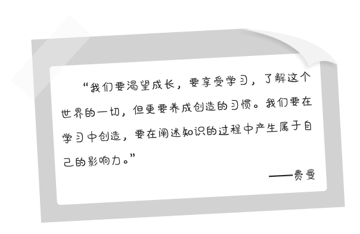

第二十三章
第三次复述
费曼说：“我们所有形式的学习都是为了达到三个目的：第一是解释问题，第二是解决问题，第三是预测问题。”本书倡导的第三次复述便是为了帮助读者在学习到一门知识后，可以同步达现这三个目标，能够使用自己所学的知识解释问题、解决问题和预测问题。
请记住“预测”这个词，它对我们的学习应该具有无比神圣的意义，是所有的学习可以达到的最高境界。这意味着我们明确了对待知识的态度——知识并非只是拿来搬开脚下的石头，或让你明白过去，而是帮你读懂未来。
建立原创观点
如果不能建立自己的原创观点，就无法称之为“100分的学习”。美国著名心理学家阿尔伯特·班杜拉（Albert Bandura）是社会学习理论的创始人，他亦被称为“认知理论之父”。1977年，班杜拉提出了“自我效能理论”，用来解释人们在特殊的情景下产生某种动机的原因。这个理论的核心观点是，一个人对自己完成某方面工作的能力总是会有一个主观评估。这个评估的结果将直接影响他接下来采取什么样的行动，也就是影响他的“行为动机”。
比如，当你学习英语到一定的阶段时，你对自己的学习成果一定会有一次自我评估：“我记住了多少单词？我能听懂口语对话吗？考试的成绩是否令我满意？与别人进行英语交流的效果如何？我能学好英语吗？”如果这个评估是正面的，种种迹象显示你非常适合学习英语，你继续学习的动力将更加强烈，英语成绩也会更好；但如果评估是负面的，你感觉自己的英语水平很拙劣，怎么学都赶不上别人，这时就会产生一种“我不适合学习英语”的悲观情绪，有很大的可能会放弃学习。
这就是“自我效能理论”的重要意义。假如你能积极地评估自己的学习效能，深入持续地学习下去，就可以逐步地在所学知识的基础上产生自己的“原创观点”。这正是我希望看到的。班杜拉认为，想对知识建立原创观点，除了直接学习书本上的内容外，更重要的还在于我们要通过对世界的观察去进行间接的学习。
人类最重要的知识大部分是通过观察学习获得的。
善于观察世界的10%人贡献了我们所学知识的90%。
在班杜拉的社会学习理论中，“观察学习”是一个重要的概念，这一概念也被称为“替代性学习”（vicarious learning）。即：
通过对学习对象的行为、表征、演化和结果等进行观察，搜集信息，获取宝贵的要素，再演绎出新的知识。这一观点与费曼的思路不谋而合。在费曼看来，所有的事物都是我们的观察对象，这是一个自由定义。物理学、化学、数学、英语、工程学、电子学，乃至未来的科学，从观察中我们都能获得某些新的创造，覆盖旧的知识，为学术研究、社会生活等提供更有依据的标准。而且，最重要的是在观察学习中我们要建立自己原创的观点。
形成有影响力的新知识
无论何时、何事，我们的重大决策都应该只在自己的能力圈中进行，即便那是一个看起来无比美好的机会。学习也是如此。我们在知识中的影响力总是而且必然出现在自己擅长的领域，对这个领域的研究是由我们真正精通并且感兴趣的知识组成的。在这个令自己感到舒适的能力圈中，我们做得要比大部分人更好。这是我们的自留地，是能完全发光发热的地方。简言之，你必须基于自己的兴趣去开发学习的能力，创造有影响力的知识。
在第三次复述中，对于学习者而言，这是一项至关重要的任务。我深知学习是一个人终生的功课，也常把这个事实告诉学生。不管你如何践行费曼学习法，或怎样理解学习的对象，你对人生成长的向往永远是最重要的。你要尽一切可能发现那个最优秀的自己，找到那个最能迸发想象力和激情的区域，然后投入全部。
但是，我们不得不承认，很多时候人都是懒散的。最勇于学习和永不服输的人也偶尔会看到自己内心的退缩，人的本性追求安逸与无知。因为安逸和无知能让人感觉到一种廉价的快乐。所以，当我们谈到“具有影响力的知识”这个问题时，一定有很多人不甚感冒。然而，如果你已经下定决心想在学习这条道路上取得真正的成就，那就要面对这个现实，制订一个与你的目标相匹配的计划，去创造知识，而不是对知识萧规曹随。

知识的影响力总是直接来源于我们对学习的热情。2016年，斯坦福大学的汉蒂姆教授（Handy Phyllis）及其团队的一项研究发现，在学校教育和自主学习的所有可控的变量中，“热情”是造成学生的学习结果最大差异的因素。
第一，对斯坦福大学的自发式学习小组的调查表明，对某一领域共同的学习热情是他们聚集在一起的最大因素。这让他们每个人从中受益匪浅，取得了巨大的成果。
第二，对一个话题的热情程度决定了你会为之付出多大的努力，而努力的程度又影响了你对这门知识的挖掘深度，最终塑造你在相关知识学习中的等级。
第三，热情也从根本上决定着你的创造力和你对新知识的理解。如果没有热情，你除了背诵和功利的应用之外，对学习可能毫无兴趣。因为你只是为了解决一个问题来学习，而不是为了改造未来。
汉蒂姆说：“热情很难测量，但我们看到它时一定会知道。热情是一切学习的精髓，它也许不能帮助你一直获胜，但它总是能让你向前发展，驱动你比过去更加理解这个世界，掌握更多的知识。”这样的说明恰当而又深刻，为我们揭示了创造性学习的本质。简而言之，当我们对所学的内容进行第三次复述时，最终的目的就是为了检验我们对知识的创造能力，形成我们自己在这方面的影响力。